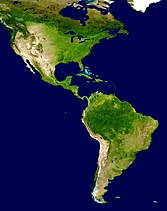

|  | América es el segundo continente más grande de los cuatro que hay en el planeta y por su gran extensión se divide en tres regiones: América del Norte, América Central y América del Sur. Limita solo con océanos (al igual que Oceanía, el más pequeño de los continentes). El continente fue descubierto por los europeos en 1492 gracias al genovés Cristóbal Colón que zarpó con tres carabelas desde el Puerto de Palos (España) y navegó durante 71 días hasta avistar tierra firme. Sin embargo, Colón murió pensando que había dado la vuelta al mundo y que había llegado a un territorio desconocido de las costas asiáticas.
|
Antes de esa fecha, América estuvo habitada por grandes civilizaciones denominadas “precolombinas”, como el Imperio Inca, las culturas mesoamericanas de los mayas, aztecas, zapotecas, olmecas y toltecas, entre otros. Varios navegantes, entre ellos, Américo Vespucio, Juan de la Cosa y Martín Waldseemüller, realizaron diferentes viajes hacia el “Nuevo Mundo” con el objetivo de ampliar el comercio europeo. En 1499 el florentino Américo Vespucio fue el primero en sugerir que se trataba de una nueva masa de tierra diferente a las Indias asiáticas, porque presentaba una población mucho mayor y más diversa que la de Asia, África o Europa. En honor a sus deducciones, surgió el nombre del continente. |
|